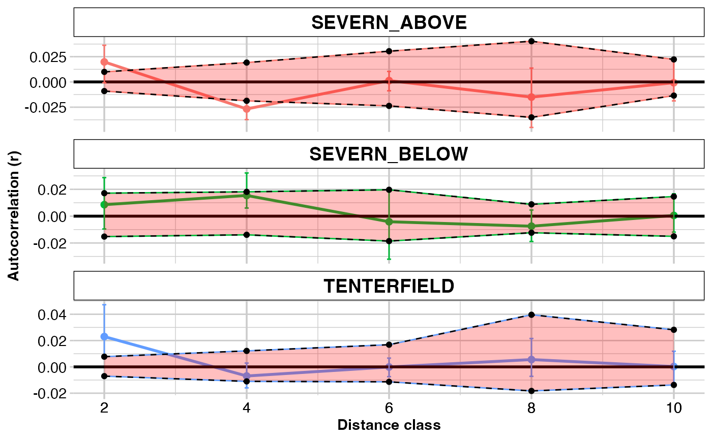

Spatial autocorrelation following Smouse and Pekall 1999
gl.spatial.autoCorr.RdGlobal spatial autocorrelation is a multivariate approach combining all loci into a single analysis. The autocorrelation coefficient r is calculated for each pairwise genetic distance pairs for all specified distance classes. For more information see Smouse and Peakall 1999, Peakall et a. 2003 and Smouse et al. 2008.
Usage
gl.spatial.autoCorr(
GD,
GGD,
bins = 2,
reps = 100,
permutation = FALSE,
bootstrap = FALSE,
plot_theme = theme_classic(),
outpath = tempdir(),
out_file_rootname = "autoCorr",
verbose = NULL
)Arguments
- GD
a matrix of individual pairwise genetic distances. In principle any other squared distance matrix can be used. see example
- GGD
A geographical distance matrix, based on the coordinates of individuals. This is typically an Euclidean distance but it can be any meaningful (geographical) distance metrics.
- bins
The number of bins for the distance classes (i.e.
length(bins) == 1)or a vectors with the break points. See details.- reps
The number to be used for permutation and bootstrap analyses
- permutation
Whether permutation calculations for the null hypothesis of no spatial structure should be carried out
- bootstrap
Whether bootstrap calculations to compute the 95 around r should be carried out
- plot_theme
User specified theme [default theme_dartR()].
- outpath
The path where to save the output
- out_file_rootname
The name of the root of the output file
- verbose
Verbosity: 0, silent or fatal errors; 1, begin and end; 2, progress log ; 3, progress and results summary; 5, full report [default NULL, unless specified using gl.set.verbosity].
Value
Returns a data frame with the following columns:
Bin The distance classes
N The number of pairwise comparisons within each distance class
r.uc The uncorrected autocorrelation coefficient
Correction the correction
r The corrected autocorrelation coefficient
L.r The corrected autocorrelation coefficient lower limit (if
bootstap = TRUE)U.r The corrected autocorrelation coefficient upper limit (if
bootstap = TRUE)L.r.null.uc The uncorrectedlower limit for the null hypothesis of no spatial autocorrelation (if
permutation = TRUE)U.r.null.uc The uncorrected upper limit for the null hypothesis of no spatial autocorrelation (if
permutation = TRUE)L.r.null The corrected lower limit for the null hypothesis of no spatial autocorrelation (if
permutation = TRUE)U.r.null The corrected upper limit for the null hypothesis of no spatial autocorrelation (if
permutation = TRUE)p.one.tail The p value of the one tail statistical test
Details
The code of this function execute behind the scene a modified
version of spautocorr from the package
PopGenReport, and it also includes
bootstraps to compute the 95
estimates, the one-tail test, and the correction factor described by
Peakall et al 2003.
If bins is of length = 1 it is interpreted as the number of (even)
bins to use. In this case the starting point is always the minimum
value in the distance matrix, and the last is the maximum. If it is a numeric
vector of length>1, it is interpreted as the breaking points. In this case,
the first has to be the lowest value, and the last has to be the highest.
There are no internal checks for this and it is user responsibility to ensure that
distance classes are properly set up. If that is not the case, data that fall
outside the range provided will be dropped. The number of
bins will be length(bins) - 1.
The permutation constructs the 95 hypothesis of no spatial structure (this is a two-tail test). The same data are also used to calculate the probability of the one-tail test (See reference below for details).
Bootstrap calculations are skipped and NA is returned when the number of
possible combinations given the sample size of any given distance class is
< reps.
References
Smouse PE, Peakall R. 1999. Spatial autocorrelation analysis of individual multiallele and multilocus genetic structure. Heredity 82: 561-573.
Double, MC, et al. 2005. Dispersal, philopatry and infidelity: dissecting local genetic structure in superb fairy-wrens (Malurus cyaneus). Evolution 59, 625-635.
Peakall, R, et al. 2003. Spatial autocorrelation analysis offers new insights into gene flow in the Australian bush rat, Rattus fuscipes. Evolution 57, 1182-1195.
Smouse, PE, et al. 2008. A heterogeneity test for fine-scale genetic structure. Molecular Ecology 17, 3389-3400.
Gonzales, E, et al. 2010. The impact of landscape disturbance on spatial genetic structure in the Guanacaste tree, Enterolobium cyclocarpum(Fabaceae). Journal of Heredity 101, 133-143.
Beck, N, et al. 2008. Social constraint and an absence of sex-biased dispersal drive fine-scale genetic structure in white-winged choughs. Molecular Ecology 17, 4346-4358.
Examples
# Select one pop only
plat_Tent <- gl.keep.ind(platypus.gl,
ind.list = platypus.gl@ind.names[pop(platypus.gl) == "TENTERFIELD"],
mono.rm = TRUE)
#> Starting gl.keep.ind
#> Processing genlight object with SNP data
#> Warning: data include loci that are scored NA across all individuals.
#> Consider filtering using gl <- gl.filter.allna(gl)
#> Deleting all but the listed individuals T27, T35, T3, T11, T19, T28, T36, T4, T12, T20, T29, T5, T13, T21, T30, T38, T6, T14, T22, T31, T39, T7, T15, T23, T32, T40, T8, T16, T24, T33, T41, T1, T9, T17, T25, T34, T42, T2, T10, T18, T26
#> Deleting monomorphic loc
#> Locus metrics not recalculated
#> Completed: gl.keep.ind
#>
# Compute a simple distance matrix and reverse it so that correlated values
# indicated more similar individuals as we are used to see plots in GenAleEx
gd <- 1 - as.matrix(gl.dist.ind(plat_Tent, method = "Simple", plot.out = FALSE))
#> Starting gl.dist.ind
#> Processing genlight object with SNP data
#> Calculating simple matching distance
#> Returning a stat::dist object
#> Completed: gl.dist.ind
#>
# Replace the diagonal with zeros
diag(gd) <- 0
# Compute the geographical distance matrix
ggd <- as.matrix(dist(plat_Tent@other$latlon))
# Spatial autocorrelation
spa <- gl.spatial.autoCorr(gd, ggd, bins = 3, reps = 100,
permutation = TRUE, bootstrap = TRUE)
#> Starting gl.spatial.autoCorr
#>

#> Saving outputs
#>
if (FALSE) {
# Alternatively, use Smouse distance from PopGneReport package
smouse.plat<-as.matrix(PopGenReport::gd.smouse(gl2gi(plat_Tent), verbose=TRUE))
spa.sm <- gl.spatial.autoCorr(smouse.plat, ggd, bins = 3, reps = 100,
permutation = TRUE, bootstrap = TRUE)
}
#' @seealso \code{\link{gl.spatial.ac.multi}}